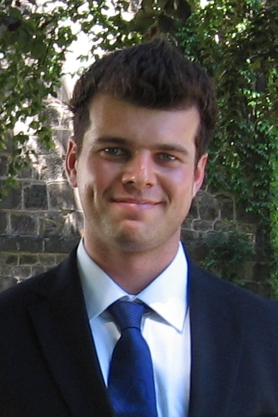

Welcome!
I am a Senior Lecturer (Associate Professor) at the School of Mathematics at Cardiff University. I am a member of the Mathematical Analysis group. My research is supported by an EPSRC Early Career Fellowship (EP/N020154/1). I am also a supervisor of a Marie Skłodowska-Curie Fellowship (790623)
Broadly speaking, I am interested in analysis and partial differential equations. Primarily, I study problems with a strong physical motivation. These include problems in kinetic theory and multiscale problems. I also have a particular interest in the spectral theory associated to these problems, and in particular its applications in ergodic theory and computational complexity.
Students: I am happy to supervise students in any of the above topics (also see my Research page for more details). Please contact me if you are interested. Click here for a brief description of projects.
News
2019 Workshop: Baptiste Morisse and Frank Rösler organized a workshop which was held in Cardiff between 24-26 June 2019, and was entitled "Small Scales and Homogenisation (SmaSH)".
South Wales Analysis & Probability Seminar: We're running a new seminar series jointly with Swansea, focusing on analysis and probability (and related fields). The first meeting was in Septermber 2018 in Cardiff, and since then the meetings are held every 3-4 months. Details here.
Intradisciplinary Lecure Series (ILS): I am the organizer of a new lecture series within the School of Mathematics at Cardiff University, which is a bit like a faculty colloquium. It is mostly geared towards PhD students, in order to give them an overview of current trends in various fields of mathematics. Website here.
Marie Skłodowska-Curie Fellowship: Together with Junyong Zhang, we were successful in securing a MSCA Fellowship (I act as supervisor). The fellowship runs between 2018-2020. This was the only fellowship in mathematics in the 2017 round of applications to receive a perfect score of 100%. Only 7 other applications (out of more than 9000) received this score. Here's the Cardiff University news item.
2018 Workshop: Together with Baptiste Morisse we organized a workshop which was held in Cardiff between 25-29 June 2018, entitled "An Analyst, a Geometer and a Probabilist Walk Into a Bar".
EPSRC project website: QUEST: Quantitative Estimates in Spectral Theory and Their Complexity
2015 Conference: In September 2015 I organized a conference entitled "The Cauchy Problem in Kinetic Theory: Recent Progress in Collisionless Models".
Publications
This is a concise list of my publications and work-in-progress that is
near completion. For
further details go to Research.
- Averaging along degenerate flows on the annulus
Submitted, 15 pages, 2019 | preprint | arXiv with B. Morisse
- Uniform convergence in von Neumann’s ergodic theorem in absence of a spectral gap
Submitted, 11 pages, 2019 | preprint | arXiv with B. Morisse
- On uniform
convergence in von Neumann's ergodic
theorem
In preparation with C. Mouhot
- The Solvability Complexity Index - Computer Science and Logic Meet Scientific Computing
Submitted, 15 pages, 2015 | preprint with A. Hansen, O. Nevanlinna and M. Seidel
- Concentrating solutions of the relativistic Vlasov-Maxwell system
Commun. Math. Sci., 17, 377-392, 2019 | preprint | arXiv | journal | doi with S. Calogero and S. Pankavich
- Weak Poincaré inequalities in absence of spectral gaps
Submitted, 14 pages, 2018 | preprint | arXiv with A. Einav
- Arbitrarily large solutions of the Vlasov-Poisson system
SIAM J. Math. Anal., 50, 4311-4326, 2018 | pre | post | arXiv | journal | doi with S. Calogero and S. Pankavich
- Instabilities of
the relativistic Vlasov-Maxwell system on unbounded domains
SIAM J. Math. Anal., 49, 4024-4063, 2017 | preprint | postprint | arXiv | journal | doi with T. Holding
- Moment bounds on the corrector of stochastic homogenization of non-symmetric elliptic finite difference equations
Commun. PDE, 42, 179-234, 2017 | preprint | arXiv | journal | doi with D. Marahrens and S. Neukamm
- Can everything be
computed? - On the
Solvability Complexity Index and Towers of Algorithms
Submitted, 79 pages, 2015 | preprint | arXiv with A. Hansen, O. Nevanlinna and M. Seidel
- Approximations of strongly continuous
families of unbounded self-adjoint operators
Commun. Math. Phys., 345, 615-630, 2016 | preprint | arXiv | journal | doi | erratum with T. Holding
- New barriers in complexity theory: On The Solvability Complexity Index and Towers of Algorithms
C. R. Acad. Sci., 353, 931-936, 2015 | preprint | journal | doi with A. Hansen, O. Nevanlinna and M. Seidel
- Instabilities in
kinetic theory and their relationship to the ergodic theorem
Contemp. Math., 653, 25-40, 2015 | preprint | arXiv | journal | doi
- On the spectrum
of shear flows and uniform ergodic theorems
J. Funct. Anal., 267, 299-322, 2014 | preprint | arXiv | journal | doi
- Instability
of
nonsymmetric nonmonotone
equilibria of the Vlasov-Maxwell system
J. Math. Phys., 52, 123703, 21 pages, 2011 | preprint | arXiv | journal | doi
- Instability of
nonmonotone magnetic
equilibria of the relativistic Vlasov-Maxwell system
Nonlinearity, 24, 3353-3389, 2011 | preprint | arXiv | journal | doi